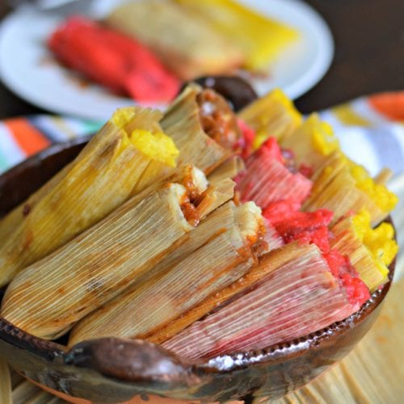

Tamales

What Are Tamales?
Different styles of tamales are found throughout Latin America, but the most famous version comes from Mexico and is made with corn dough called masa, filled with meat, and steamed in a corn husk.
Tamales are easy enough to make, but since wrapping them in the husks takes a while they’re often prepared in large quantities.
Entire families get together at tamale-making parties to shape and fill tamales, assembly line–style, for special occasions such as Christmas and Candlemas.
Ingredients
- 1 cup lard (or vegetable shortening or neutral-flavor oil, such as corn oil)
- 2 tablespoons butter (optional)
- 3½ cups masa harina (dry nixtamalized corn flour)
- 1 teaspoon baking powder
- 2 teaspoons kosher salt
- 3 cups low-sodium chicken broth (or vegetable broth or water)
- 1 pound package dried corn husks
- 3 pounds fresh masa
- 2-3 pounds filling, such as shredded rotisserie chicken mixed with salsa verde, chilled
Steps
Make the masa:
- In the bowl of a stand mixer fitted with the paddle attachment, cream lard and butter together until light and fluffy, about 2 minutes. (Alternatively, use a hand mixer or whisk.)
- In a separate bowl, mix masa harina, baking powder, and kosher salt together until well combined. Add dry ingredients to the whipped lard and mix until a shaggy dough forms.
- Add broth one cup at a time, mixing after every addition, until a light, spongy dough forms. (You may not need to use all of the broth.) Test the masa by pressing a little into the palm of your hand. If it holds its shape and doesn’t crack, and is able to be easily removed from your palm without sticking, the dough is ready. If not, add more liquid and continue to mix.
Assemble the tamales:
- In a large bowl or stockpot, soak corn husks in warm water and cover. (If the corn husks rise to the surface, cover with a clean plate or other weight.) Soak until softened, about 30 minutes and up to overnight, then drain and pat dry with a clean kitchen towel.
- Line a large strainer or steamer basket with corn husks (this is a good use for any extra-large or extra-small husks) and place a ball of foil in the center. Place tamales against the ball, open side up, leaning them against each other.
- Set a softened corn husk on a flat surface smooth side up, with the wide end facing you and the tapered end pointing away from you. Starting from the wide end of the husk, spread 2 tablespoons masa with your fingers or an offset spatula from edge to edge and about ⅔ of the way up the husk. You should have a rectangle about a ¼ inch thick. Repeat with remaining husks.
- Add 2 tablespoons of chilled filling to the center of the masa-covered husk. Fold one side of the husk over the filling, then fold the other side to cover completely, gently pinching masa together if necessary. With the seam side up, tuck the tapered end of the husk under the tamael. Repeat with remaining tamales.
- Once you’ve assembled all of your tamales, add about 3 cups water to a large pot fitted with a strainer and nestle tamales inside the strainer, steam side and exposed side up, making sure the tamales do not touch the water. Steam over medium heat until masa feels firm and separates easily from husks, about 40 minutes to 2 hours.